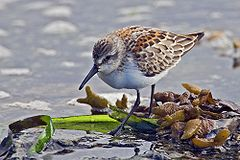
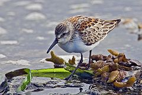

| Western Sandpiper | |
|---|---|
|  | |
| Conservation status | |
| Binomial name | |
| Calidris mauri Cabanis, 1857 |
|
| Synonyms | |
|
Ereunetes mauri |
| Western Sandpiper | |
|---|---|
|  | |
| Conservation status | |
| Binomial name | |
| Calidris mauri Cabanis, 1857 |
|
| Synonyms | |
|
Ereunetes mauri |
The Western Sandpiper, Calidris or Erolia mauri, is a small shorebird.
Adults have dark legs and a short thin dark bill, thinner at the tip. The body is brown on top and white underneath. They are reddish-brown on the crown. This bird can be difficult to distinguish from other similar tiny shorebirds, especially the Semipalmated Sandpiper. This is particularly the case in winter plumage, when both species are plain gray. The Western Sandpiper acquires winter plumage much earlier in the autumn than the Semipalmated Sandpiper.
Their breeding habitat is on tundra in eastern Siberia and Alaska. They nest on the ground usually under some vegetation. The male makes several scrapes; the female selects one and lays 4 eggs. Both parents incubate and care for dependent young, who feed themselves. Sometimes the female deserts her mate and brood prior to offspring fledging.
They migrate to both coasts of North America and South America. It is a very rare vagrant to western Europe.
These birds forage on mudflats during migration and the non-breeding season by probing or picking up food by sight. Foraging occurs on tundra and wet meadows during the breeding season. They mainly eat insects, small crustaceans and mollusks.
This is one of the most abundant shorebird species in North America with a population in the millions.

{kind=link}